CODIGOS DE PINTURA HARLEY - harley paint database
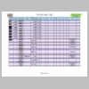
1903-to-1909-harley-davidson-paint-codes-and-color-chart.webp
104.88 KB
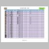
1909-to-1925-harley-davidson-paint-codes-and-color-chart.webp
121.00 KB
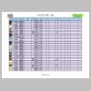
1926-to-1928-harley-davidson-paint-codes-and-color-chart.webp
121.31 KB
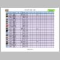
1928-to-1930-harley-davidson-paint-codes-and-color-chart.webp
119.15 KB
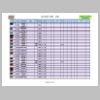
1931-to-1933-harley-davidson-paint-codes-and-color-chart.webp
113.82 KB
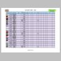
1933-to-1935-harley-davidson-paint-codes-and-color-chart.webp
112.99 KB
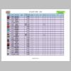
1936-to-1938-harley-davidson-paint-codes-and-color-chart.webp
114.91 KB
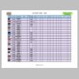
1938-to-1941-harley-davidson-paint-codes-and-color-chart.webp
107.62 KB
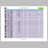
1941-to-1947-harley-davidson-paint-codes-and-color-chart.webp
110.81 KB
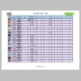
1947-to-1951-harley-davidson-paint-codes-and-color-chart.webp
108.23 KB
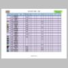
1951-to-1957-harley-davidson-paint-codes-and-color-chart.webp
108.92 KB
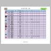
1957-to-1959-harley-davidson-paint-codes-and-color-chart.webp
111.70 KB
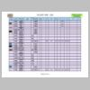
1959-to-1961-harley-davidson-paint-codes-and-color-chart.webp
115.24 KB
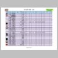
1962-to-1968-harley-davidson-paint-codes-and-color-chart.webp
120.95 KB
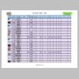
1968-to-1972-harley-davidson-paint-codes-and-color-chart.webp
120.35 KB
1972-to-1976-harley-davidson-paint-codes-and-color-chart.webp
121.50 KB
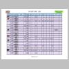
1976-to-1978-harley-davidson-paint-codes-and-color-chart.webp
120.66 KB
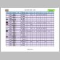
1978-to-1979-harley-davidson-paint-codes-and-color-chart.webp
120.39 KB
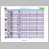
1980-to-1982-harley-davidson-paint-codes-and-color-chart.webp
125.68 KB
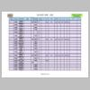
1982-to-1984-harley-davidson-paint-codes-and-color-chart.webp
112.19 KB
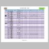
1985-to-1987-harley-davidson-paint-codes-and-color-chart.webp
106.98 KB
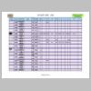
1987-to-1988-harley-davidson-paint-codes-and-color-chart.webp
113.46 KB
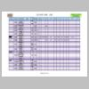
1988-to-1989-harley-davidson-paint-codes-and-color-chart.webp
107.42 KB
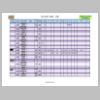
1989-to-1990-harley-davidson-paint-codes-and-color-chart.webp
104.99 KB
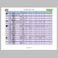
1990-to-1991-harley-davidson-paint-codes-and-color-chart.webp
110.72 KB
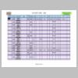
1991-to-1992-harley-davidson-paint-codes-and-color-chart.webp
105.24 KB
1992-to-1993-harley-davidson-paint-codes-and-color-chart.webp
101.73 KB
1993-to-1994-harley-davidson-paint-codes-and-color-chart.webp
115.79 KB
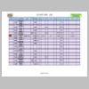
1994-harley-davidson-paint-codes-and-color-chart.webp
101.30 KB
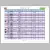
1994-to-1995-harley-davidson-paint-codes-and-color-chart.webp
119.31 KB
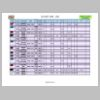
1995-to-1997-harley-davidson-paint-codes-and-color-chart.webp
128.28 KB
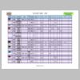
1997-to-1998-harley-davidson-paint-codes-and-color-chart.webp
124.61 KB
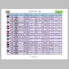
1998-to-1999-harley-davidson-paint-codes-and-color-chart.webp
148.57 KB
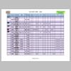
2000-harley-davidson-paint-codes-and-color-chart.webp
118.31 KB
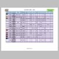
2001-2000-harley-davidson-paint-codes-and-color-chart.webp
123.20 KB
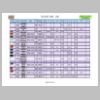
2001-harley-davidson-paint-codes-and-color-chart.webp
138.08 KB
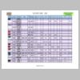
2002-2001-harley-davidson-paint-codes-and-color-chart.webp
127.57 KB
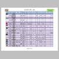
2003-2002-harley-davidson-paint-codes-and-color-chart.webp
131.05 KB
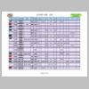
2004-2003-harley-davidson-paint-codes-and-color-chart.webp
135.63 KB
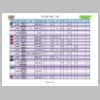
2004-harley-davidson-paint-codes-and-color-chart.webp
120.11 KB
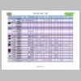
2005-2004-harley-davidson-paint-codes-and-color-chart.webp
120.10 KB
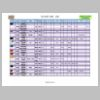
2006-2005-harley-davidson-paint-codes-and-color-chart.webp
121.17 KB
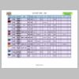
2006-harley-davidson-paint-codes-and-color-chart.webp
111.81 KB
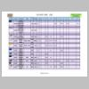
2007-harley-davidson-paint-codes-and-color-chart.webp
110.69 KB
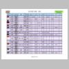
2007-harley-davidson-paint-codes-and-color-chart-.webp
130.85 KB
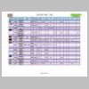
2008-2007-harley-davidson-paint-codes-and-color-chart.webp
107.84 KB
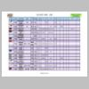
2008-harley-davidson-paint-codes-and-color-chart.webp
125.20 KB
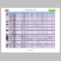
2009-2008-harley-davidson-paint-codes-and-color-chart.webp
123.58 KB
2009-harley-davidson-paint-codes-and-color-chart.webp
130.72 KB
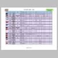
2010--harley-davidson-paint-codes-and-color-chart.webp
126.54 KB
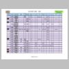
2010---harley-davidson-paint-codes-and-color-chart.webp
121.28 KB
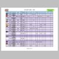
2011--harley-davidson-paint-codes-and-color-chart.webp
122.35 KB
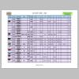
2012-2011-harley-davidson-paint-codes-and-color-chart.webp
130.91 KB
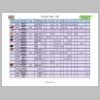
2012--harley-davidson-paint-codes-and-color-chart.webp
130.51 KB
2013-2012-harley-davidson-paint-codes-and-color-chart.webp
115.31 KB
2013--harley-davidson-paint-codes-and-color-chart.webp
130.31 KB
2014-2013--harley-davidson-paint-codes-and-color-chart.webp
122.30 KB
2014--harley-davidson-paint-codes-and-color-chart.webp
105.75 KB
2015-2014--harley-davidson-paint-codes-and-color-chart.webp
127.59 KB
2015-harley-davidson-paint-codes-and-color-chart.webp
130.29 KB
2016-2015--harley-davidson-paint-codes-and-color-chart.webp
121.02 KB
2016--harley-davidson-paint-codes-and-color-chart.webp
110.31 KB
2017-2016--harley-davidson-paint-codes-and-color-chart.webp
126.43 KB
2017--harley-davidson-paint-codes-and-color-chart.webp
117.92 KB
2017---harley-davidson-paint-codes-and-color-chart.webp
128.95 KB
2018-2017--harley-davidson-paint-codes-and-color-chart.webp
120.48 KB
2018--harley-davidson-paint-codes-and-color-chart.webp
111.83 KB
2019-2018--harley-davidson-paint-codes-and-color-chart.webp
136.39 KB
2019--harley-davidson-paint-codes-and-color-chart.webp
139.87 KB
2020-2019--harley-davidson-paint-codes-and-color-chart.webp
135.50 KB
2020-harley-davidson-paint-codes-and-color-chart.webp
130.48 KB
2020--harley-davidson-paint-codes-and-color-chart-.webp
118.90 KB
misc-harley-paint-codes.webp
61.83 KB
Created by IrfanView